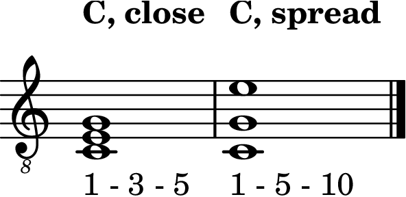

Level 2 · Chapter 24
Music Theory: The Spread Triad and the 10th
The last two chapters rotated the triad: same three notes, different note on the floor. That was one knob. The triad has exactly one more: how far apart the notes stand. This chapter turns it.
Close and spread
The compact three-string triads compared in this chapter pack root, 3rd, and 5th within a single octave, each note as close to the next as it can get. That packing has a name: close position. Full barre voicings use doublings and can spread farther than an octave, so do not confuse their texture with this specific close-position definition.
Now take root-position C Major and lift the middle note, the 3rd, up an octave. The stack reads C–G–E. Check the members: C, E, and G, so it is still C Major. Check the floor: C is still the lowest note, so it is still root position. Nothing was inverted. The only thing that changed is the air between the notes. A voicing opened up like this is called a spread voicing (you will also hear “open voicing”).

So the two knobs are truly independent. Inversion changes which note stands on the floor. Spreading changes how far apart the notes stand. Turn either one, or both, and the chord keeps its name.
Counting past the octave: the 10th
One thing does need a new name. The lifted E now sits more than an octave above the root. How far above, exactly? Count the note names, the same way you always have: C (1), D (2), E (3), F (4), G (5), A (6), B (7), C (8), D (9), E (10). Ten names. The interval is a 10th: an octave plus a 3rd.
Intervals wider than an octave are called compound intervals, and they all obey one small rule: subtract 7 and you get the simple interval inside. A 10th minus 7 is a 3rd. (It is 7 rather than 8 because the note where the octave ends and the new count begins gets counted in both, the same overlap you met when inversions summed to 9.)
Two more facts, and both are things you already believe:
- Quality carries over. A Major 3rd raised an octave is a Major 10th; a minor 3rd becomes a minor 10th. C up to the high E is a Major 10th.
- The job does not change. In C–G–E, the high E is still the 3rd of the chord. The voicing chapters settled this: a chord tone keeps its job no matter which octave it lives in. “10th” names the distance; “the 3rd” names the job.
Guitarists lean on this interval so much that “playing in 10ths” is standard vocabulary: a bass note with a melody note gliding a 10th above it is one of the instrument’s most beloved sounds.
Why spread?
Because of what the air does. In close position the three notes blend into one compact block: solid and punchy, the sound of every chord you have strummed. Spread the voicing and each note gets room to ring as its own voice; the chord turns wide and clear, almost piano-like, with the top note standing out like a melody. Neither is better. They are two textures of the same chord, and now you can choose.
Hear it
Both sounds are sitting inside your open C chord right now.
- A 3rd, then a 10th: play the A-string C (3rd fret), then the D-string E (2nd fret): a Major 3rd, close neighbors. Now play the A-string C, then the open high e string: the same two letters with an octave of sky between them, a Major 10th. Same color, more light.
- Close, then spread: pick strings 5-4-3 of the open C chord (C–E–G): close position. Now pick strings 5-3-1 (C, open G, open high e): C–G–E, the exact spread voicing from this chapter’s figure, no new fingering required. Listen to the block become three separate voices.
Try it yourself
Each pair below is an octave-plus interval. Name each one as a Major 10th or a minor 10th. (Subtract 7 and judge the 3rd you already know.)
- C up to the E above the octave
- A up to the C above the octave
- F up to the A above the octave
- E up to the G above the octave
Answer key
- C–E is a Major 3rd, so this is a Major 10th
- A–C is a minor 3rd: a minor 10th
- F–A is a Major 3rd: a Major 10th
- E–G is a minor 3rd: a minor 10th
You already knew every one of these. They are 3rds from the intervals chapter, an octave wider.
The triad now has two independent knobs, and neither can touch its name. Rotate it and the floor changes; spread it and the air changes; the three jobs (root, 3rd, 5th) stay exactly who they were. And when a note drifts past the octave, the counting follows it with one small rule: subtract 7, and there is the interval you already know.